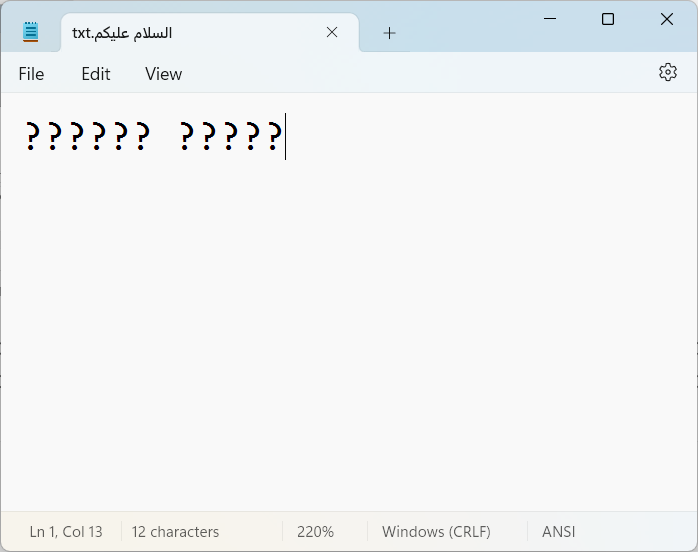

graph TD
A[Object]
A --> A3[Sequences متتابعة]
A3 --> A311[Strings سلسلة]
A3 --> A312[Tuples زوج]
A3 --> A313[Bytes بايت]
A3 --> A321[Lists قائمة]
4 السلاسل
4.1 Character Encoding
Character encoding is the process of assigning numbers to graphical characters, especially the written characters of human language, allowing them to be stored, transmitted, and transformed using digital computers.
ASCII codes represent text in digital devices. ASCII has just 128 code points, of which only 95 are printable characters (English-only). The set of available punctuation had significant impact on the syntax of computer languages and text markup.
ANSII contain further characters from 128 to 255, which differ based on language.
Unicode has over a million code points, but the first 128 of these are the same as ASCII
4.1.0.1 Question: How many languages are covered by Unicode?
Answer: all of the languages that can be written in the following widely-used scripts: Latin, Greek, Cyrillic, Armenian, Hebrew, Arabic, Syriac, Thaana, Devanagari, Bengali, Gurmukhi, Oriya, Tamil, Telugu, Kannada, Malayalam, Sinhala, Thai, Lao, Tibetan, Myanmar, Georgian, Hangul, Ethiopic, Cherokee, Canadian Aboriginal Syllabics, Khmer, Mongolian, Han (Japanese, Chinese, Korean ideographs), Hiragana, Katakana, and Yi. Source
Figure below: showing that if we try to save Arabic text (Unicode) using ASCII (a subset of it), we get warning, and we lose our work.

Error reads: “This file contains characters in Unicode format which will be lost if you save this file as an ANSI encoded text file. To keep the Unicode information, click Cancel below and then select one of the Unicode options from the Encoding drop down list. Continue?”
4.2 Code Points
السلسلة النصية (String) هي تسلسل من القيم التي تمثل نقاط الشيفرة في نظام Unicode. يمكن تمثيل جميع نقاط الشيفرة في النطاق U+0000 - U+10FFFF داخل سلسلة نصية. لا يوجد في Python نوع خاص بالحرف (char)، بل يتم تمثيل كل نقطة شيفرة في السلسلة النصية ككائن سلسلة بطول 1.
الدالة المدمجة ord() تقوم بتحويل نقطة الشيفرة من شكلها النصي إلى عدد صحيح ضمن النطاق 0 - 10FFFF؛ بينما تقوم الدالة chr() بتحويل عدد صحيح ضمن النطاق 0 - 10FFFF إلى كائن سلسلة نصية بطول 1.
يمكن استخدام str.encode() لتحويل سلسلة نصية (str) إلى bytes باستخدام ترميز النص المحدد، ويمكن استخدام bytes.decode() لتحقيق العكس.
# ASCII (English-only) characters are represented by numbers between 0 and 127
print(ord("A"), ord("Z"))
print(chr(65), chr(90))
print(ord("a"), ord("z"))
print(ord("0"), ord("9"))65 90
A Z
97 122
48 57لنستكشف السلاسل عن طريق حزمة string:
import string
print(string.ascii_letters)
print(string.punctuation)abcdefghijklmnopqrstuvwxyzABCDEFGHIJKLMNOPQRSTUVWXYZ
!"#$%&'()*+,-./:;<=>?@[\]^_`{|}~الكود التالي يعرض نقاط الشيفرة للحروف اللاتينية والعلامات الترقيمية (سنتعلم كيف نفهم for in في الدروس القادمة):
import string
print([ord(x) for x in string.ascii_letters])
print([ord(x) for x in string.punctuation])[97, 98, 99, 100, 101, 102, 103, 104, 105, 106, 107, 108, 109, 110, 111, 112, 113, 114, 115, 116, 117, 118, 119, 120, 121, 122, 65, 66, 67, 68, 69, 70, 71, 72, 73, 74, 75, 76, 77, 78, 79, 80, 81, 82, 83, 84, 85, 86, 87, 88, 89, 90]
[33, 34, 35, 36, 37, 38, 39, 40, 41, 42, 43, 44, 45, 46, 47, 58, 59, 60, 61, 62, 63, 64, 91, 92, 93, 94, 95, 96, 123, 124, 125, 126]نلاحظ أن الحروف اللاتينية تبدأ من 65 وتنتهي بـ 90، ثم من 97 إلى 122 بينما تبدأ العلامات الترقيمية من 33 وتنتهي بـ 47 ثم من 58 وتنتهي بـ 64. ثم من 91 وتنتهي بـ 96. وأخيرًا من 123 وتنتهي بـ 126.
ماذا عن الحروف العربية؟ أين تقع في شفرة Unicode؟
# Arabic Unicode points are between 1536 and 1791
print(ord("أ"), hex(ord("أ")))
print(ord("ب"), hex(ord("ب")))
print(ord("ي"), hex(ord("ي")))
print(ord('َ'), hex(ord('َ')))
print(ord('ُ'), hex(ord('ُ')))1571 0x623
1576 0x628
1610 0x64a
1614 0x64e
1615 0x64fSee Wikipedia: Arabic script in Unicode for details.
خلاصة: السلاسل في بايثون تمثل الحروف سواءً الإنجليزية أو العربية أو غيرها.
والأمر الآخر: أن الحروف في الأصل أرقام مخزنة لكن يتم عرضها بشكل نصي للمستخدم.
4.3 السلاسل النصية (Strings)
String can represent anything; literally as a sequence of symbols. However, they are mostly used with textual data such as: - names (short) - addresses (long) - messages (multiline)
name = 'Adam' # String literals can use single quotes
address = "Riyadh, Saudi Arabia" # or double quotes; it does not matter# Triple quoted strings may span multiple lines.
# All associated whitespace will be included in the string literal.
message = """Hello everyone,
I hope you are enjoying the course,
Thank you.
"""
print(message)Hello everyone,
I hope you are enjoying the course,
Thank you.
Note: there is no separate “character” type
type('a')strLength of a string:
phone = "123456789"
len(phone)94.4 String Methods
- Strings are objects, just like everything else in Python.
- Objects have methods that can be called using the
.operator followed by()(parenthesis):
… We will delve into this in more detail in upcoming lessons.
There are numerous functions available to operate on strings in Python. The table below provides an overview of the most commonly used string methods:
Must-Know String Methods
| Function | Description |
|---|---|
.upper() |
Converts a string to uppercase. |
.lower() |
Converts a string to lowercase. |
.find() |
Finds the index of a substring within a string. |
.replace() |
Replaces occurrences of a substring within a string. |
.startswith() |
Checks if a string starts with a specified prefix. |
.endswith() |
Checks if a string ends with a specified suffix. |
.count() |
Counts the number of occurrences of a substring within a string. |
.split() |
Splits a string into a list of substrings based on a delimiter. |
.join() |
Joins elements of an iterable into a string using a separator. |
.strip() |
Removes leading and trailing whitespace from a string. |
See the appendix for more details.
Let’s try some string methods:
print("hello".upper())
print("HeLLO".lower())HELLO
helloname = "adam ibraheem"
print(name.capitalize())
print(name.title())Adam ibraheem
Adam Ibraheemيمكن التعرف على الدوال المدمجة للسلسلة عن طريق الدالة help:
help(str.title)
# str.title? # in JupyterHelp on method_descriptor:
title(self, /) unbound builtins.str method
Return a version of the string where each word is titlecased.
More specifically, words start with uppercased characters and all remaining
cased characters have lower case.
4.4.1 count, find, and replace
# Count occurrences
name = "Adam Ibraheem"
print(name.count('a'))
print(name.find('a')) # fist occurrence
print(name.replace('a', 'x'))2
2
Adxm Ibrxheem# 3rd argument is `count`
# Maximum number of occurrences to replace.
# -1 (the default value) means replace all occurrences
print(name.replace('a', 'x', 1))Adxm Ibraheem4.4.2 Whitespace Characters
Printable characters include: - ascii_letters - digits - punctuation
import string
string.printable'0123456789abcdefghijklmnopqrstuvwxyzABCDEFGHIJKLMNOPQRSTUVWXYZ!"#$%&\'()*+,-./:;<=>?@[\\]^_`{|}~ \t\n\r\x0b\x0c'Non-printable characters are called whitespace. This includes the characters: 1. space 2. tab 3. linefeed 4. return 5. formfeed 6. vertical tab
import string
string.whitespace' \t\n\r\x0b\x0c'Let’s look at three whitespace characters: space, tab, and linefeed.
# Tab character: "\t"
print('A\tB')A B# Newline character: '\n'
print('A\nB')A
BNotice the length of a string is the number of characters in the string, both printable and whitespace.
print(len('A B'))
print(len('A\tB'))
print(len('A\nB'))3
3
3In general, if we take a string and add to it these characters, we get the same length plus 3:
s = 'Salam'
assert len(s + '\n\t ') == len(s) + 34.4.3 .strip()
# note that this will remove leading and trailing whitespace,
# but not whitespace in the middle of the string
text = '\t hello world \n\n\n'
print(text) hello world
# Strip whitespaces
print(text.strip())hello world4.4.4 .split()
See: Splitlines
# multi-line string
text = '''
Hello
World
How are you?
'''# displays the string as is (showing whitespace characters)
text'\nHello\nWorld\n\nHow are you?\n'# follows control characters and prints visible characters
print(text)
Hello
World
How are you?
text.splitlines()['', 'Hello', 'World', '', 'How are you?']# Split
print("Hello, world".split()) # default is space['Hello,', 'world']print("Hello, world".split("l"))['He', '', 'o, wor', 'd']# `maxsplit` argument: Maximum number of splits to do.
# -1 (the default value) means no limit.
print("Hello, world".split("l", 1)) # 1 means split only once['He', 'lo, world']4.4.5 .join()
names = ["Adam", "Belal", "Camal"]
seperator = ','
print(seperator.join(names))
print(''.join(names))
print(' + '.join(names))Adam,Belal,Camal
AdamBelalCamal
Adam + Belal + Camal4.5 Repetition
s = "Salam " * 3
print(s)Salam Salam Salam zeros = "0" * 3
x = "1" + zeros
print(x)1000x + x'10001000'- We expected
1000, but we got10001000. Why? - Because
xis a string, and+operator concatenates strings.
Let’s convert x to an integer using int():
z = int(x)
z + z20004.6 Concatenation
We want to be able to write:
lvl = 20
sentence = "I want to reach level " + lvl
print(sentence)--------------------------------------------------------------------------- TypeError Traceback (most recent call last) Cell In[227], line 2 1 lvl = 20 ----> 2 sentence = "I want to reach level " + lvl 3 print(sentence) TypeError: can only concatenate str (not "int") to str
It raises an error! Why? .. the error message tells use that we cannot concatenate a string with an integer.
How do we solve that? We convert the integer to a string using str():
age = 40
sentence = "My name is Adam and I am " + str(age) + " years old."
print(sentence)My name is Adam and I am 40 years old.Notice that we add two space characters, one after “am” and one before “years” to make the sentence readable.
Try doing this for the previous sentence with lvl:
# try it4.7 String formatting
We look at 3 most commonly used ways to concatenate strings in Python:
Firstly, joining individual strings via the + operator (as we did above). - Basic, but no control over the format - Also you have to convert numbers to strings using str()
Secondly, using the .format() method.
Where replacement fields are delimited by braces {}. Each replacement field contains either:
- the numeric index of a positional argument (starting from
0), or - the name of a keyword argument (if the argument is a dictionary).
Thirdly, using f-strings.
A formatted string literal or f-string is a string literal that is prefixed with ‘f’ or ‘F’. These strings may contain replacement fields, which are expressions delimited by curly braces {}. While other string literals always have a constant value, formatted strings are really expressions evaluated at run time. Docs
name = "John"
lvl = 300
x1 = "My name is " + name + " and I want to reach level " + str(lvl) # + operator
x2 = "My name is {} and I want to reach level {}".format(name, lvl) # .format() method
x3 = f"My name is {name} and I want to reach level {lvl}" # f-strings
assert x1 == x2 == x3
print(x1)My name is John and I want to reach level 3004.7.0.1 Exercise
Print "Hello, my name is John Doe. and I am 30 years old". Using the variables first_name, last_name, and age via all three approaches mentioned above:
# try it4.7.1 Alignment and padding
print(name.ljust(15))
print(name.center(15))John
John A fun way to decorate a string using center method:
print('*' * 20)
print('Adam'.center(20, "*"))
print('*' * 20)********************
********Adam********
********************4.7.1.1 Exercise
Refactor the above code snippet to define three variables and use them in decorating the name:
namewidthdecorator
# try it
name = 'Adam'Padding numbers:
print(f'{100:10}')
print(f'{1000:10}')
print(f'{10000:10}') 100
1000
100004.8 Formatting numbers
4.8.1 Thousands separator
big_num = 10000
print(f'{big_num}')
print(f'{big_num:,}')10000
10,0004.8.2 Scientific Notation
small_num = 1e-4
print(f"{small_num:.2e}")1.00e-044.8.3 Decimals
num = 10.5689
print(f'{num}')
print(f'{num:.4f}')
print(f'{num:.2f}')
print(f'{num:.0f}')10.5689
10.5689
10.57
114.8.3.1 Example: currency
Here we use 2 components inside the curly braces and the $ prefix: - $ sign is added before the number (not part of the formatted number at all) - , adds the thousands separator - .2f round the number to 2 decimal places
price = 2978.95
print(f"${price:,.2f}")$2,978.954.8.4 Parametrized formats
We can also make both the number n and the padding p to be variables:
n = 100
p = 5
print(f'{n:{p}}') 100By default the number is right-aligned. We can left-align it by adding <. Notice the difference between the two expressions below:
print(f'{n:>{p}}')
print(f'{n:<{p}}') 100
100 Checkout: PyFormat for more.
4.8.5 Number literal formats
Literals are notations for constant values of some built-in types. Example: 42 is an integer literal and 3.14 is a floating-point literal.
Python allows more readable ways in writing number literals: - underscores _ in numbers separate them for better readability - e or E can be used to represent scientific notation - 0b or 0B for binary numbers - 0o or 0O for octal numbers - 0x or 0X for hexadecimal numbers - j or J for complex numbers
assert 1e-4 == 0.0001
assert 1_000_000 == 1000000
assert 0b1010 == 10
assert 0o10 == 8
assert 0x10 == 16
assert 1 + 2j == 2j + 1